← アプリにもどる写真・路線の出典
確認日：2026-09-22（広電5200形・岩徳線キハ40系は2026-09-24、車両カードの入れかえ分は2026-09-27、錦川鉄道のNT3000形は2026-09-30、SLやまぐち号のC57形は2026-10-02、ふくやまの Red Wing・ラ・マル・マリンライナーは2026-10-03、新幹線のN700A・みずほ・さくら・ひかりレールスター・500系は2026-10-04、0系・ドクターイエロー・N700S・E5系はやぶさは2026-10-05、813系・DENCHAは2026-10-07、821系・EF510形300番台・883系ソニックは2026-10-08）。鉄道好きの家庭向け非公式学習アプリです。JR各社・撮影者との提携を示すものではありません。車両写真の著作権は各権利者に帰属します。
路線図
鹿児島本線 博多〜小倉（博多〜香椎は2026-10-07、香椎〜小倉は2026-10-08 追加）・香椎線 香椎〜西戸崎（2026-10-07 追加）／山陽新幹線 博多〜新大阪（2026-10-04 追加）／東海道新幹線 新大阪〜東京（2026-10-05 追加）／山陽本線 新山口〜岡山（徳山〜新山口は2026-10-02、三原〜岡山は2026-10-03 追加）／瀬戸大橋線 岡山〜児島（2026-10-03 追加）／可部線 全線／呉線 全線／岩徳線 全線／芸備線 広島〜下深川／錦川清流線 全線（2026-09-30 追加）。駅順・接続は以下の資料によります。2026-10-04 から、駅の位置・線路の形・海岸線は本物の地図のとおりに描いています（およそ1km＝50の縮尺。新岩国は清流新岩国と見分けられるよう少し離し、止まらない駅の上を線が通るところは約300mよけています）。駅の位置と線路の形は「国土数値情報（鉄道データ N02-23）」（国土交通省、CC BY 4.0）を、陸と海岸線と湖（琵琶湖など。2026-10-05 から）は「地球地図日本 第2.2版」（国土地理院、国土地理院コンテンツ利用規約）を加工して作成しました（形を省いて地図の座標に変換）。実際の運行情報・停車パターンは扱いません。芸備線は下深川から先、山陽本線は新山口から西と岡山から東、瀬戸大橋線の児島から先（JR四国）、山口線・宇部線・福塩線・伯備線・宇野みなと線・津山線・桃太郎線・赤穂線、九州新幹線（博多から南）、鹿児島本線の小倉から先（門司港方面）と博多から南（鳥栖方面）、日豊本線、折尾で分かれる筑豊本線（若松線・福北ゆたか線）、香椎線の香椎から宇美方面は未収録です。2027年開業予定の JR貝塚駅（箱崎〜千早）は入れていません。錦川清流線の清流みはらし駅（ふだんの列車は止まらない臨時駅）は入れていません。
JR西日本 広島エリア駅ナンバー路線図
JR西日本 岩徳線 2235D 駅順
錦川鉄道 時刻表（令和8年3月14日改正、錦川清流線の駅順）・各駅紹介（2026-09-30 確認）
JR西日本 沿線点描 錦川清流線 川西駅～錦町駅（行波・北河内・南桑の読み。そのほかの駅の読みは Wikipedia の各駅の記事と乗換案内で確認。根笠は乗換案内などでは「ねがさ」だが、錦川鉄道の各駅紹介の表記〔nekasa〕と地元での読みに合わせて「ねかさ」とした）
JR西日本 呉線 区間時刻表
JR西日本 山陽線 駅順（寺家・新白島含む）
JR西日本 山陽線 徳山〜岩国 駅順
JR西日本 山陽本線 区間時刻表（新山口〜徳山の駅順）・JRおでかけネットの各駅の駅情報（新南陽〜新山口の読み。戸田は「へた」、富海は「とのみ」。2026-10-02 確認）
JR西日本 山陽本線 区間時刻表（三原〜岡山の駅順）・JR西日本 瀬戸大橋線・宇野みなと線 区間時刻表（岡山〜児島の駅順）・JRおでかけネットの各駅の駅情報（糸崎〜岡山・大元〜児島の読み）・JR西日本 岡山エリア駅ナンバー路線図（瀬戸大橋線の色。2026-10-03 確認）
JR西日本 区間時刻表 新幹線（鹿児島中央〜博多〜東京）（山陽新幹線の駅順）・JRおでかけネットの各駅の駅情報（博多・小倉・新下関・厚狭・新岩国・東広島・新尾道・相生・姫路・西明石・新神戸・新大阪の読み。2026-10-04 確認）
JR東海 列車走行位置（東海道新幹線の駅順）・JR東海 Maps of station layouts（東海道新幹線の駅名のローマ字。読みの確認）・JRおでかけネットの各駅の駅情報（京都・米原の読み。2026-10-05 確認）
JR九州 駅別時刻表 鹿児島本線・香椎線（博多〜西戸崎の駅順）・JR九州 駅情報（吉塚・箱崎・千早・香椎・和白・奈多・雁ノ巣・海ノ中道・西戸崎の読み。九産大前〜西小倉の23駅の駅順と読みは駅別時刻表で2026-10-08 確認。2026-10-07 確認）
カードをもらえる駅
獲得駅はゲーム上の到達目標です。写真の撮影地や車両の運行区間の境界を意味しません。写真は撮影当時の姿です。
227系0番台 Red Wing ― 玖波駅から最初の1区間を開通したとき
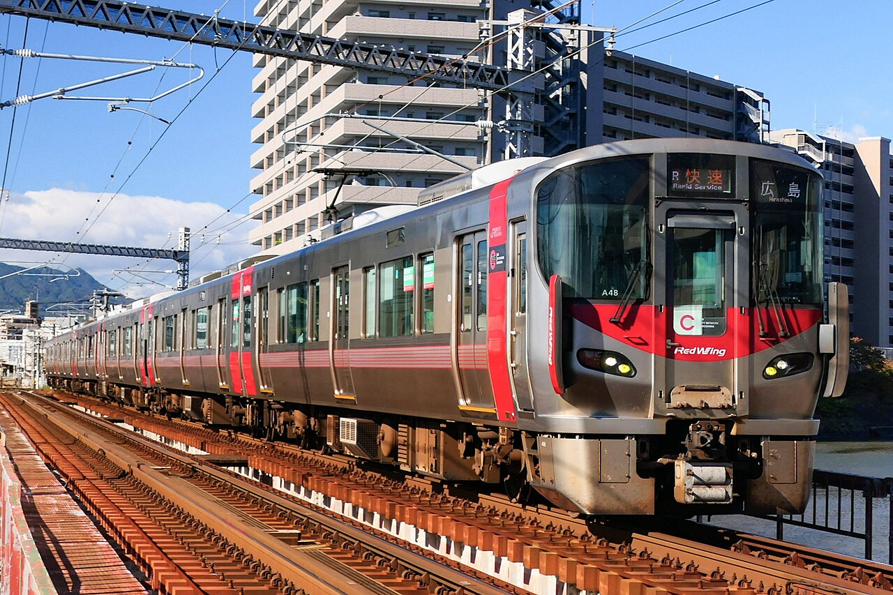
ひろしまエリアの赤い電車。山陽本線・呉線・可部線で活躍する227系だよ。
車両・地域の参考資料
写真：JRW Series227-0 A48.jpg
作者：MaedaAkihiko
原典 ／ CC0
変更：Wikimedia提供の縮小画像を使用。写真の描き換えなし。
写真説明：A rapid train "City Liner" bound for Hiroshima, led by the 227-0 series A48 formation, running between Itsukaichi Station and Shin-Inokuchi Station on the JR Sanyo Main Line.
TWILIGHT EXPRESS 瑞風 ― 宮島口駅
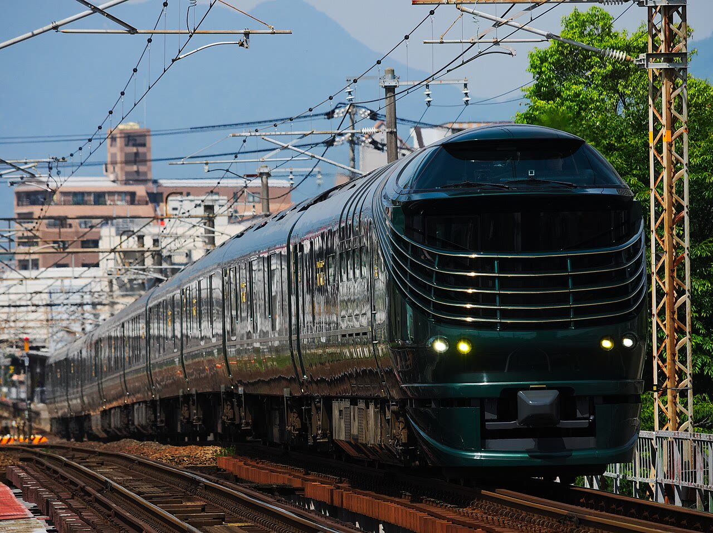
泊まりがけで旅をする豪華な寝台列車。ときどき山陽本線を走って、宮島口や岩国にも停まるよ。
TWILIGHT EXPRESS 瑞風 山陽コース（公式）
写真：JRW Kiha 87 Twilight Express Mizukaze 2018-05-27.jpg
作者：khws4v1
原典 ／ CC BY-SA 2.0
変更：Wikimedia提供の縮小画像（長辺1280px）を使用。トリミング・AI補正なし。
写真説明：JR West Kiha 87 Twilight Express Mizukaze
はなあかり ― 五日市駅
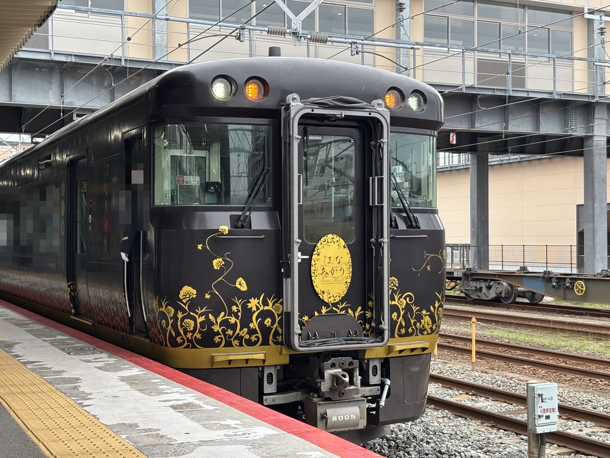
黒い車体に金色の花がえがかれた観光列車。2026年の春に、広島から宮島口を通って岩国まで走ったよ。
車両・運転区間の参考資料（マイナビニュース 2026年1月28日）
写真：家族撮影の はなあかり.jpg
作者：家族撮影
原典 ／ 家族提供写真
変更：撮影者提供の写真を長辺1280pxへ縮小し、写っている人（乗務員・乗客）にモザイク。撮影情報を削除。トリミング・AI補正・描き換えなし。
写真説明：駅に停車中の観光列車「はなあかり」（キハ189系8005）の正面
JR貨物 EF210形（ECO-POWER 桃太郎） ― 広島駅
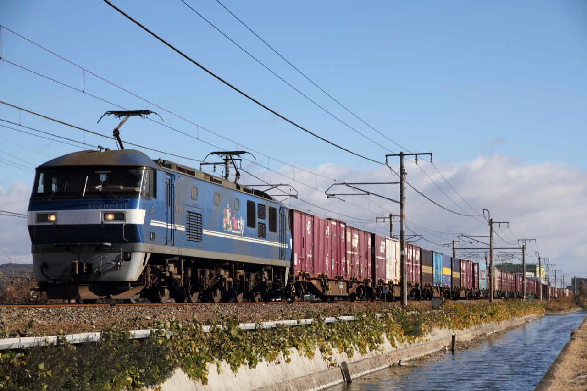
山陽本線で貨物列車を引く「ももたろう」。広島駅の近くには、貨物列車の駅もあるよ。
車両・地域の参考資料
写真：JRF EF210-111 20211218.jpg
作者：Mitsuki-2368
原典 ／ CC BY-SA 4.0
変更：長辺1280pxへ縮小・JPEG再圧縮。トリミング・描き換えなし。
写真説明：山陽本線 庭瀬〜中庄間を走行するEF210-111号機（キャラクターラッピング仕様）
JR貨物 EF210形300番台 ― 瀬野駅
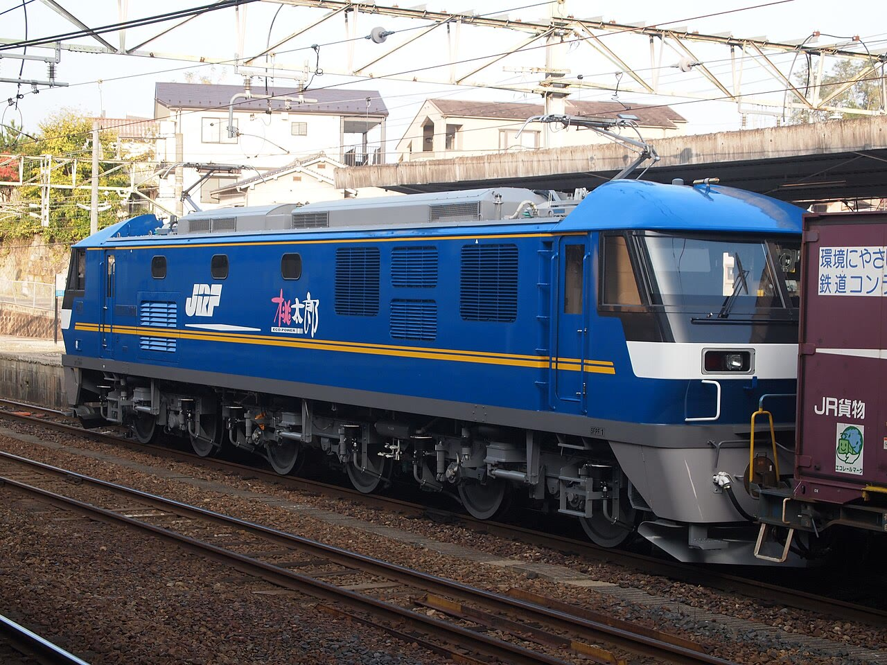
瀬野と八本松のあいだは急な坂道。重い貨物列車をうしろから押して助ける機関車だよ。「押し太郎」と呼ばれることもあるよ（ファンの呼び名）。
車両の参考資料（Wikipedia）
写真：EF210-306 Saijo 20151024.jpg
作者：kh ws
原典 ／ CC BY-SA 2.0
変更：Wikimedia提供の縮小画像（長辺1280px）を使用。トリミング・AI補正なし。
写真説明：JR Freight Class EF210-300 electric locomotive EF210-306 at the rear of a freight train at Saijo Station
227系0番台 カープ応援ラッピング（2026） ― 西条駅
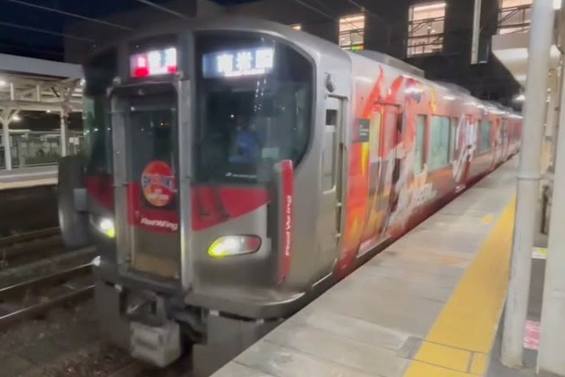
広島のプロ野球チーム、カープを応援する電車。2026年は山陽本線と呉線を走るよ。
JR西日本 カープ応援ラッピングトレイン2026
写真：家族撮影の カープ応援ラッピングトレイン（動画の1コマ）.jpg
作者：家族撮影
原典 ／ 家族提供写真
変更：撮影者提供の動画から1コマを切り出し、電車のまわりをトリミング。撮影情報なし。AI補正・描き換えなし。
写真説明：夜の駅に入ってくる227系のカープ応援ラッピングトレインの正面
227系500番台 Urara ― 三原駅
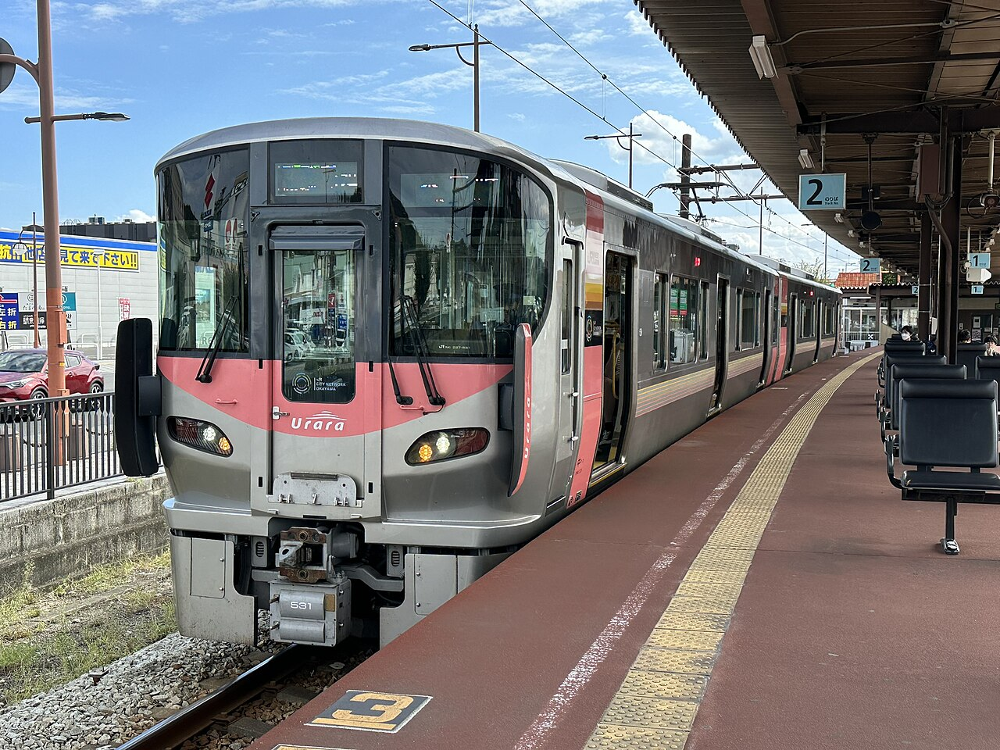
岡山・備後エリアの227系。三原まで来ると、Uraraの走るエリアにつながるよ。
車両・地域の参考資料
写真：227-500 series "Urara" at Uno Station.jpg
作者：Travelweb.au
原典 ／ CC0
変更：Wikimedia提供の縮小画像を使用。写真の描き換えなし。
写真説明：宇野駅に停車する227系500番台Urara
227系0番台 グリーンムーバーカラー ― 可部駅
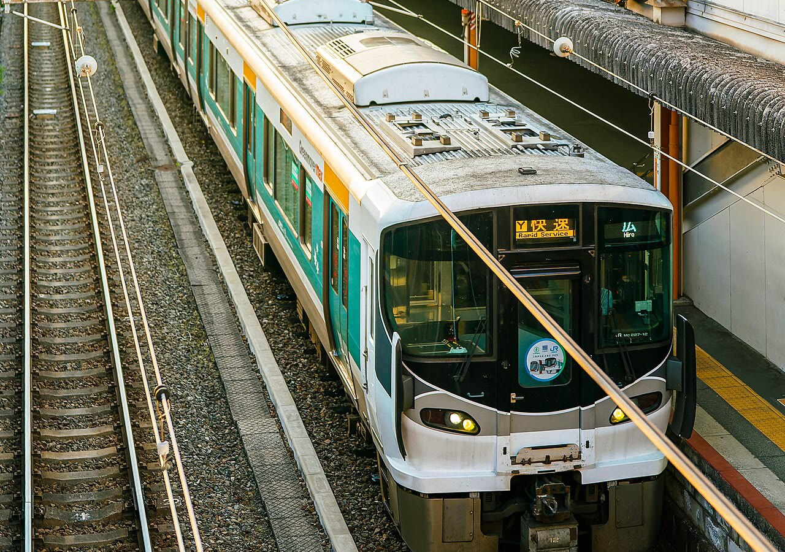
広電の路面電車「グリーンムーバーマックス」と色をとりかえっこした227系。可部線も走るよ。
JR西日本・広島電鉄 ラッピングコラボトレイン ／ railf.jp
写真：JRW-Series227-0 A12 Green Mover Max.jpg
作者：KageroYukikaze
原典 ／ CC BY-SA 4.0
変更：Wikimedia提供の縮小画像（1280×1920px）から、電車のまわりを横長（1280×900px）にトリミング。AI補正・描き換えなし。
写真説明：JR West 227-0 Series 3-car set A12 in Hiroshima Electric Railway "Green Mover Max" livery, Kure Station.
etSETOra（エトセトラ） ― 呉駅
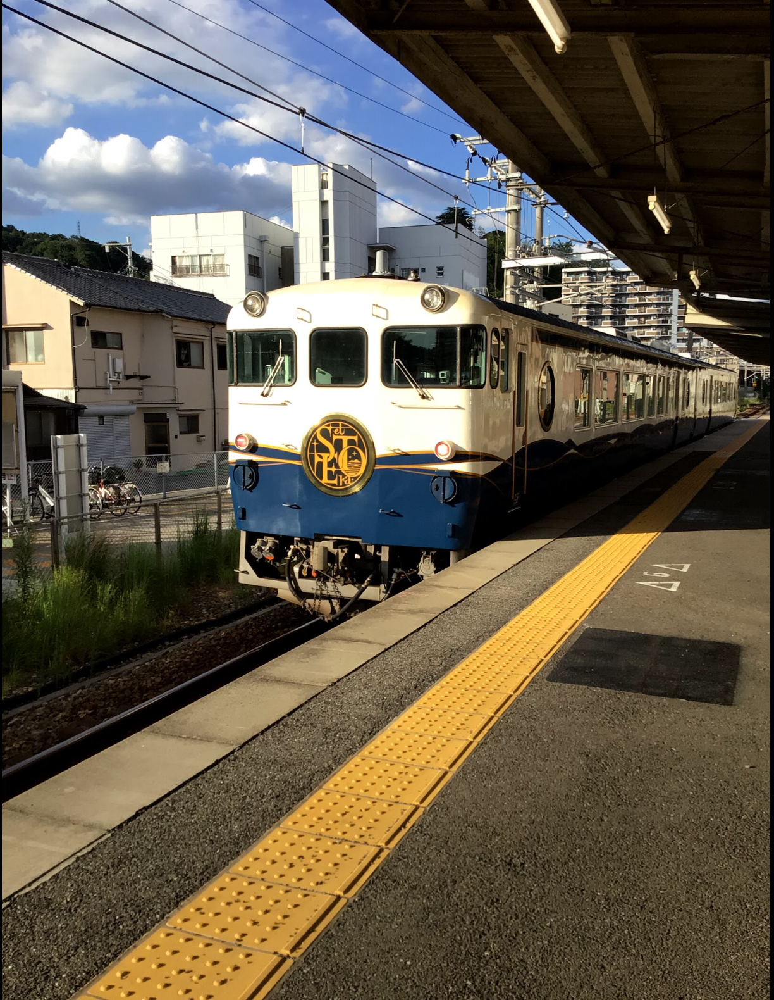
呉線を通って瀬戸内を旅する観光列車。海の青と、波の白をまとっているよ。
車両・地域の参考資料
写真：西広島駅を通過するetSETOra(2021年).jpg
作者：勇敢な夕刊
原典 ／ CC BY-SA 4.0
変更：Wikimedia提供画像を使用。トリミング・AI補正なし。
写真説明：西広島駅を通過するetSETOra
227系0番台 ばらのラッピング ― 竹原駅
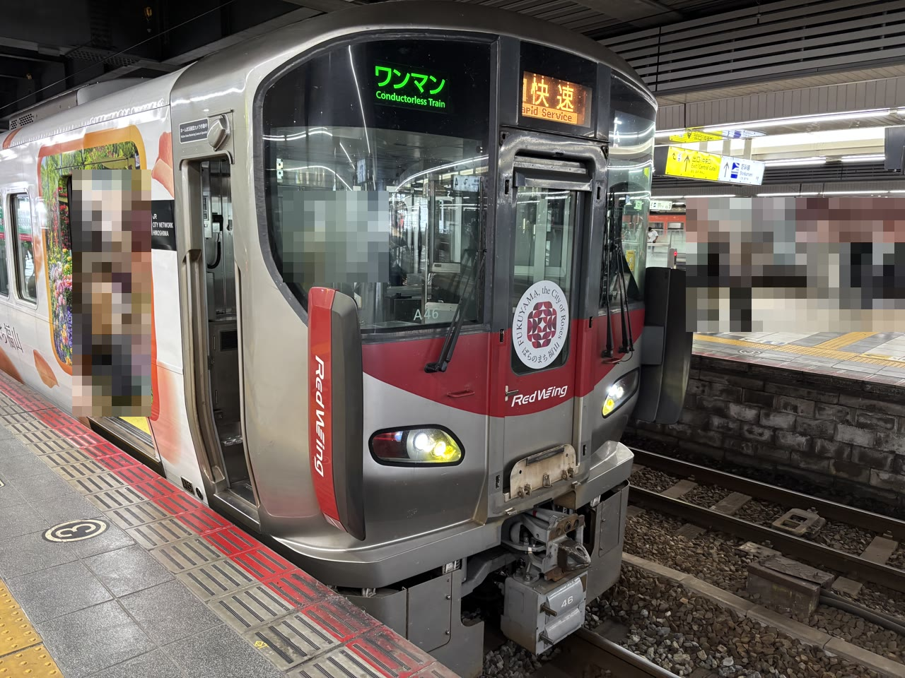
「ばらのまち」福山を紹介する電車。大きなばらと花びらがえがかれて、呉線を全部走るよ。
車両・運転区間の参考資料（railf.jp 2026年5月16日）
写真：家族撮影の 227系 ばらのラッピングトレイン.jpg
作者：家族撮影
原典 ／ 家族提供写真
変更：撮影者提供の写真を長辺1280pxへ縮小し、写っている人（乗客・ホームの人）にモザイク。撮影情報を削除。AI補正・描き換えなし。
写真説明：広島駅に停車中の227系A46編成（ばらのラッピングトレイン）の正面と側面
キハ40形（朱色） ― 下深川駅
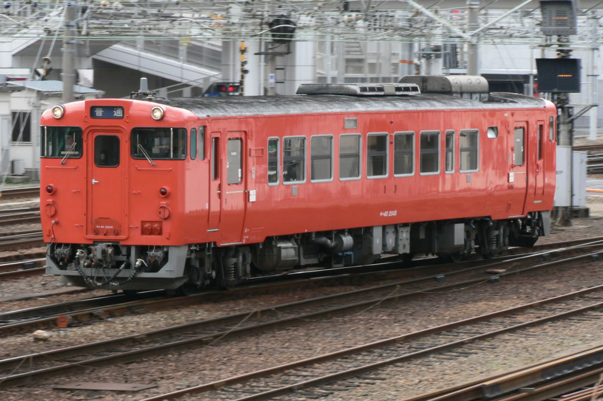
芸備線の広島〜三次を走るオレンジ色のディーゼル車。運転席が両方にあるから、1両でも走れるよ。写真の撮影場所は原典に書かれていません。
三次市 芸備線車両紹介
写真：JR West Kiha40 2045.png
作者：Hisagi
原典 ／ CC BY-SA 3.0
変更：Wikimedia提供画像をJPEGに変換。トリミング・AI補正なし。
写真説明：JR西日本、キハ40 2045（首都圏色）
キハ47形（朱色） ― 岩国駅
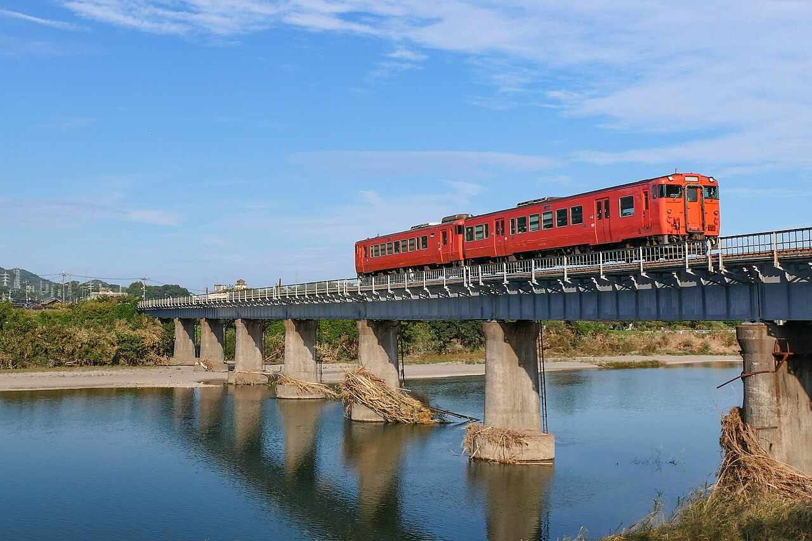
岩国駅で会えるオレンジ色のディーゼル車。運転席は片方だけ。写真は岩徳線で、錦川の鉄橋をわたるところだよ。
車両・地域の参考資料（写真の説明）
写真：JRW Gantoku-line Kiha47.jpg
作者：MaedaAkihiko
原典 ／ CC BY-SA 4.0
変更：Wikimedia提供の縮小画像（長辺1280px）を使用。トリミング・AI補正なし。
写真説明：A local train of JR West's Kiha 40 series 47 and 40 that crosses the Nishiki River between Nishi-Iwakuni Station and Kawanishi Station on the Iwantoku Line.
115系3000番台 ― 柳井駅
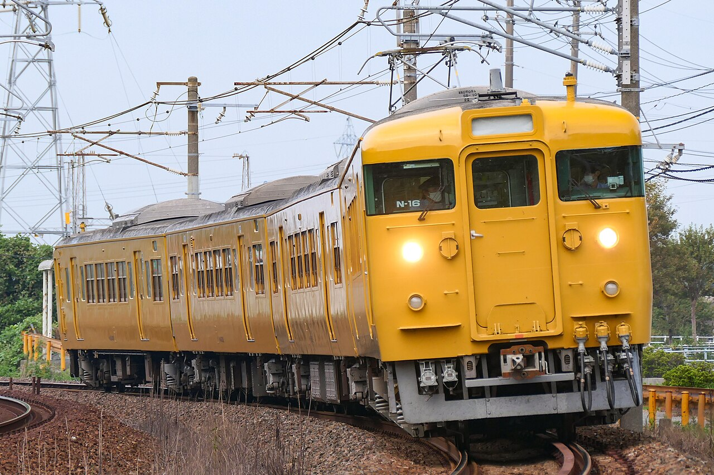
山陽本線で活躍してきた黄色い電車。写真は山口エリアの115系3000番台だよ。
車両・地域の参考資料
写真：JRW Series115-3000 N-16.jpg
作者：MaedaAkihiko
原典 ／ CC BY-SA 4.0
変更：Wikimedia提供画像を使用。トリミング・AI補正なし。
写真説明：A local train with the 115-3000 series N-16 formation that runs between Shin-Shimonoseki Station and Chofu Station on the Sanyo Main Line.
WEST EXPRESS 銀河 ― 光駅
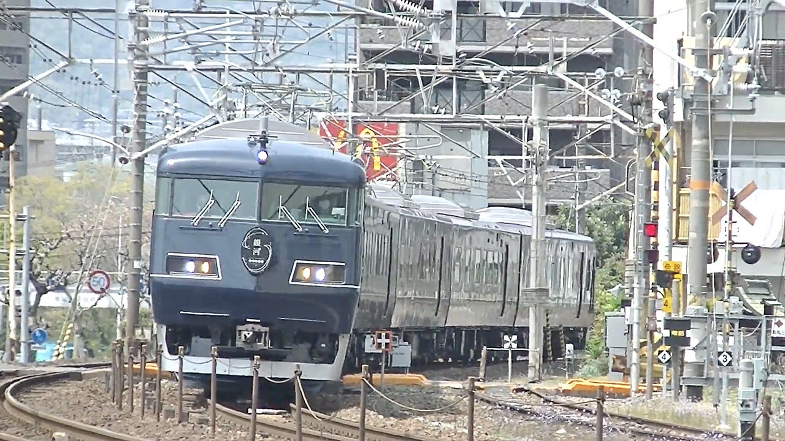
夜も走る観光列車。ときどき山陽本線を通って、下関まで行くよ。夜空のような濃い青色。
WEST EXPRESS 銀河 山陽コース（JRおでかけネット）
写真：JRW West Express Ginga Hiroshima 2020-04-16.jpg
作者：交通大臣 鉄道チャンネル
原典 ／ CC BY 3.0
変更：Wikimedia提供の縮小画像（長辺1280px）を使用。トリミング・AI補正なし。
写真説明：Luxury train West Express Ginga conducting staff training at Hiroshima Station, April 16, 2020.
227系500番台 Kizashi ― 徳山駅
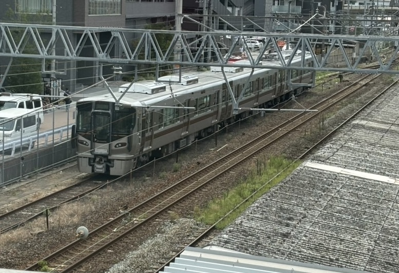
山口エリアの227系。山陽本線の岩国〜下関で運行する、黒と金色のKizashiだよ。
車両・地域の参考資料
写真：家族撮影の227系500番台 Kizashi.jpg
作者：家族撮影
原典 ／ 家族提供写真
変更：撮影者提供の写真をそのまま使用。AI補正・描き換えなし。
写真説明：線路上を走る227系500番台Kizashiを遠方から撮影した写真
NT3000形 せせらぎ号 ― 清流新岩国駅
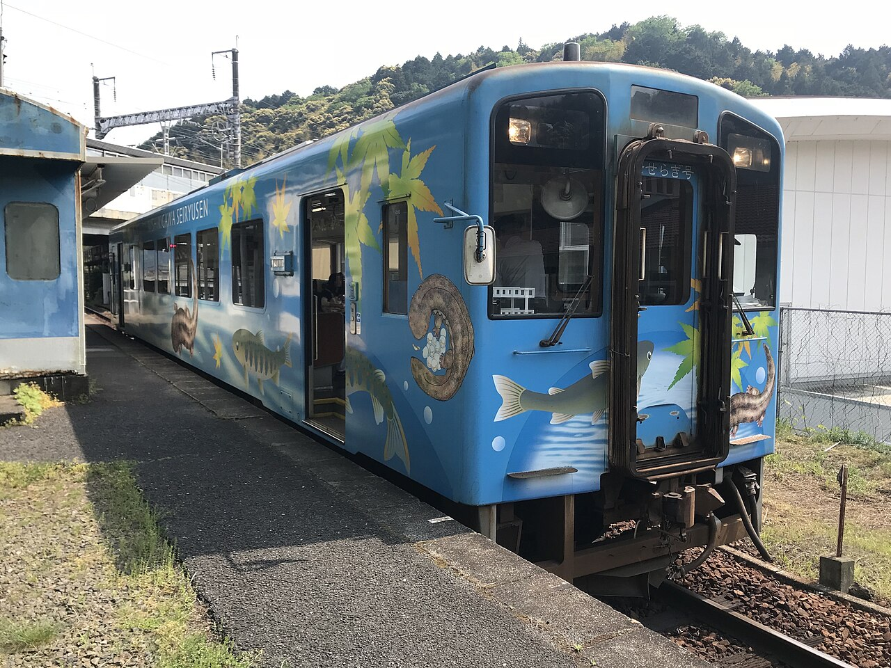
錦川清流線を走る4両のディーゼルカーの1両。「清流のブルー」の車体に、川の魚の絵。写真は清流新岩国駅に止まっている錦町行き。
錦川鉄道 車両紹介（4色のテーマ）・錦川鉄道NT3000形気動車（Wikipedia、愛称）（2026-09-30 確認）
写真：Train for Nishikicho Station at Seiryu-Shin-Iwakuni Station 2.jpg
作者：そらみみ
原典 ／ CC BY-SA 4.0
変更：Wikimedia提供の縮小画像（長辺1280px）を使用。トリミング・AI補正なし。
写真説明：清流新岩国駅に停車中の錦町行き錦川清流線列車
NT3000形 ひだまり号 ― 北河内駅
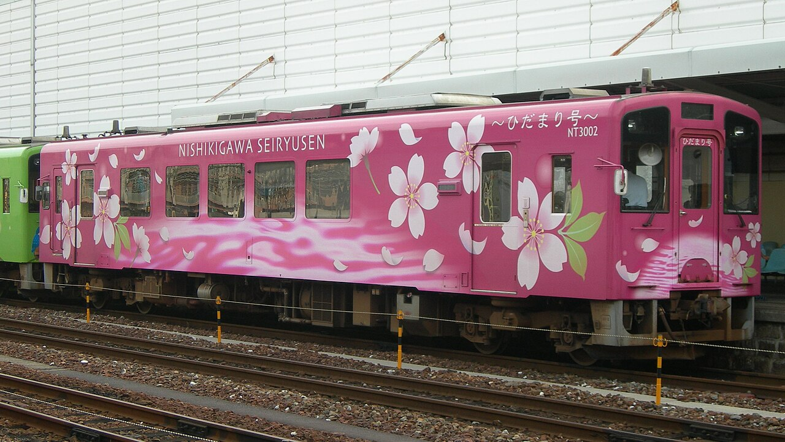
「桜のピンク」のNT3000形。車体いっぱいに桜の花。
錦川鉄道 車両紹介（4色のテーマ）・錦川鉄道NT3000形気動車（Wikipedia、愛称）（2026-09-30 確認）
写真：Nishikigawa Railway DMU NT3002.jpg
作者：Rsa
原典 ／ CC BY-SA 3.0
変更：Wikimedia提供の縮小画像（長辺1280px）を使用。トリミング・AI補正なし。
写真説明：錦川鉄道錦川清流線の所属車両：ひだまり号(NT-3000型)
NT3000形 こもれび号 ― 根笠駅
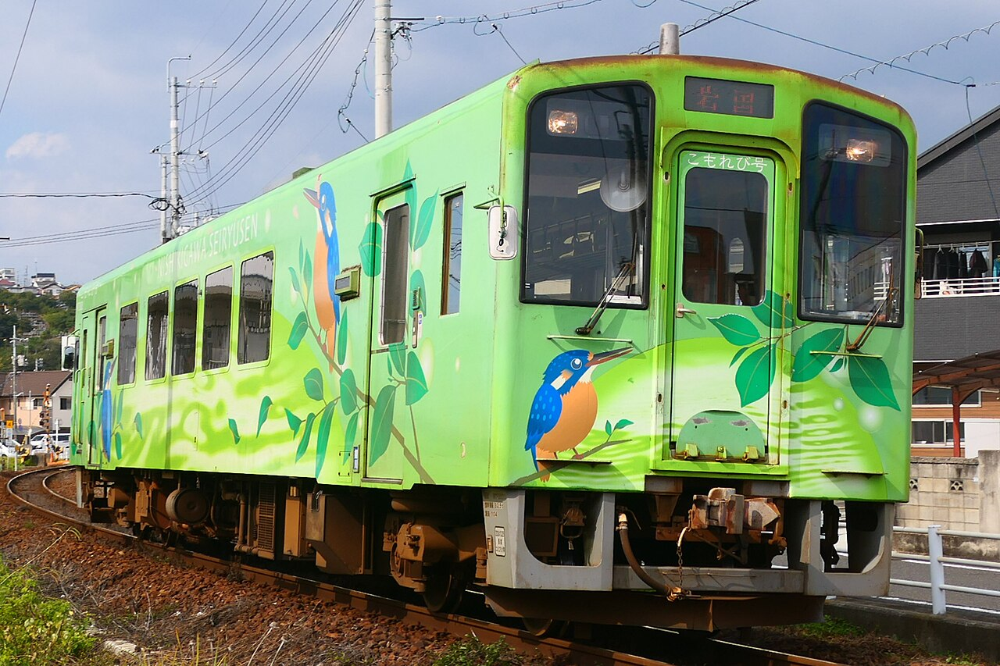
「森林のグリーン」のNT3000形。葉っぱとカワセミの絵。写真は岩徳線の西岩国〜岩国で撮影。
錦川鉄道 車両紹介（4色のテーマ）・錦川鉄道NT3000形気動車（Wikipedia、愛称）（2026-09-30 確認）
写真：Nishikigawa NT3000-3003.jpg
作者：MaedaAkihiko
原典 ／ CC0
変更：Wikimedia提供の縮小画像（長辺1280px）を使用。トリミング・AI補正なし。
写真説明：NT3000 series diesel railcar (NT-3003) of the Nishikigawa Seiryu Line, running between Nishi-Iwakuni Station and Iwakuni Station on the JR Gantoku Line.
NT3000形 きらめき号 ― 錦町駅
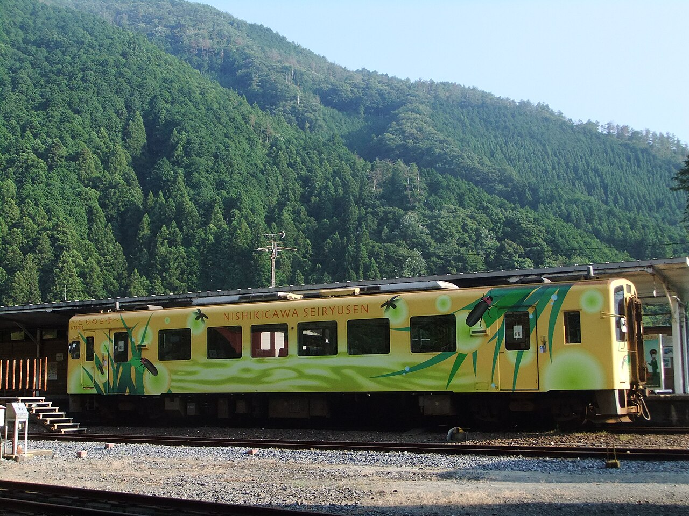
「蛍の光のイエロー」のNT3000形。蛍の絵。
錦川鉄道 車両紹介（4色のテーマ）・錦川鉄道NT3000形気動車（Wikipedia、愛称）（2026-09-30 確認）
写真：Nishikigawa Railway DMU NT3004.JPG
作者：TRJN
原典 ／ CC BY-SA 4.0
変更：Wikimedia提供の縮小画像（長辺1280px）を使用。トリミング・AI補正なし。
写真説明：NT-3004 きらめき号
SLやまぐち号 C57形1号機 ― 新山口駅
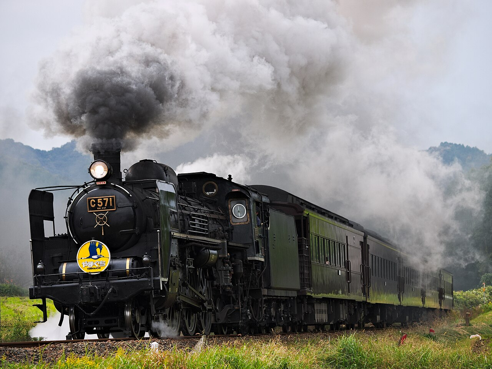
煙をはいて走る蒸気機関車（SL）。新山口駅から山口線の津和野駅まで、SL全盛期の客車を再現した35系客車を引いて走る。2026年10月3日からC57形が引く。写真は2017年、35系客車を引くC57形1号機。
JR西日本 SLやまぐち号の運転計画について（2026年10月～12月）・SLやまぐち号 公式サイト（C57形での運行）（2026-10-02 確認）
写真：SL Yamaguchi 2017 (26381048739).jpg
作者：khws4v1
原典 ／ CC BY-SA 2.0
変更：Wikimedia提供の縮小画像（長辺1280px）を使用。トリミング・AI補正なし。
写真説明：C571 + 35系
ふくやまの Red Wing（227系0番台）― 福山駅
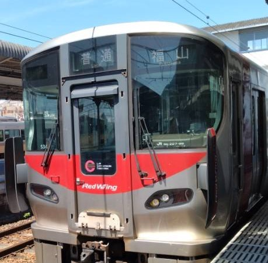
広島エリアの227系 Red Wing は、2016年3月26日のダイヤ改正から山陽本線の福山エリアにも入るようになった。写真は行き先が「普通 福山」の227系0番台（2023年）。運転画面は1枚目の Red Wing と同じ絵。
JR西日本 岡山支社 平成28年春ダイヤ改正について（「山陽本線の福山エリアに227系車両を投入」。2026-10-03 確認）
写真：227-0 普通福山行.jpg
作者：ひかり500号
原典 ／ CC BY-SA 4.0
変更：Wikimedia提供の元画像（459×914px）の上下を切り抜き（459×450px、車両の前の部分）。引き伸ばし・AI補正なし。
写真説明：Series 227 0 bound for Fukuyama
La Malle de Bois ラ・マル しまなみ ― 倉敷駅
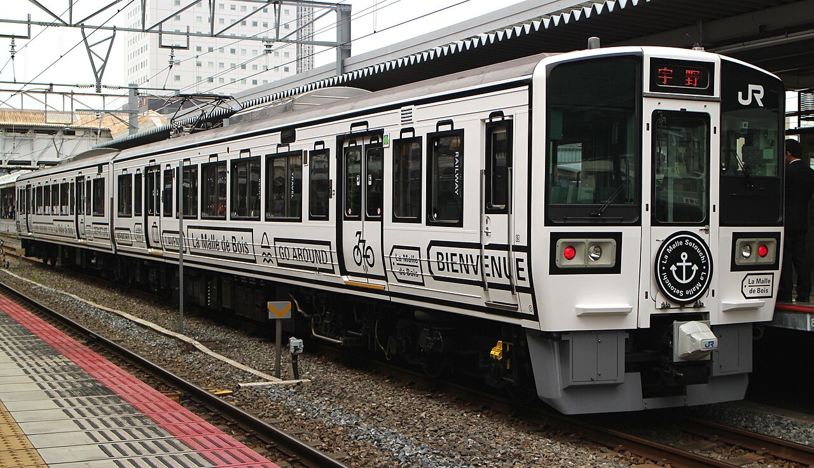
「旅支度をする特別な時間を楽しむ列車、走る旅の道具箱（トランク）」がテーマの観光列車（213系を改造）。自転車を4台積める。ラ・マル しまなみは岡山→倉敷→笠岡→福山→尾道→三原に停まる。
JRおでかけネット La Malle de Bois（2026-10-03 確認）
写真：JRW 213-7000 La Malle de Bois 20160410.jpg
作者：Rsa
原典 ／ CC BY-SA 3.0
変更：Wikimedia提供の縮小画像（長辺1280px）を使用。トリミング・AI補正なし。
写真説明：The JR West 213 series La Malle de Bois tourist train at Okayama Station
快速マリンライナー 5000系 ― 岡山駅
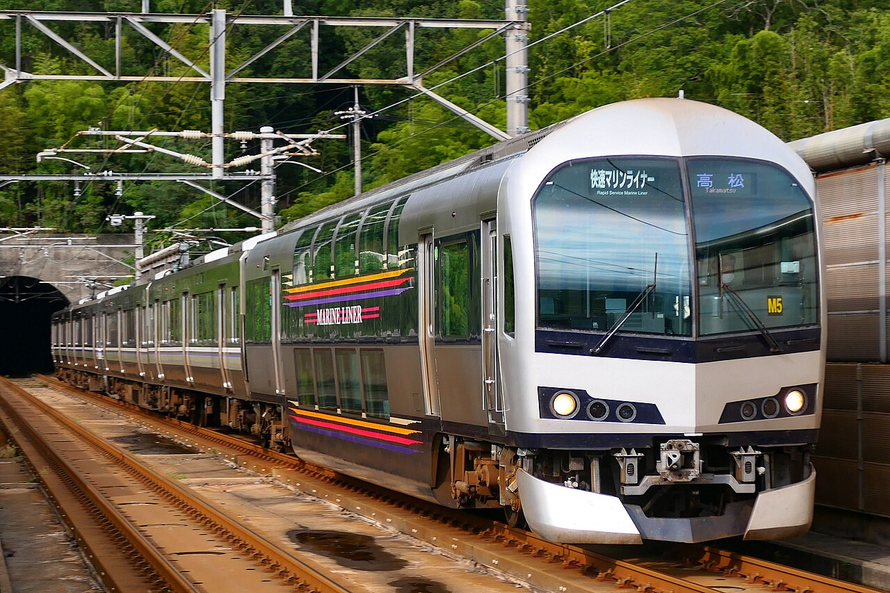
岡山と高松を結ぶ快速。先頭車両は2階建てで、2階のグリーン車からは瀬戸内海が見える（JR四国とJR西日本が共同で導入）。写真は木見駅に入る5000系 M5編成（2022年）。
JR四国 車両情報＜マリンライナー＞（2026-10-03 確認）
写真：JRS Series5000-M5 Marine-liner-41.jpg
作者：MaedaAkihiko
原典 ／ CC BY-SA 4.0
変更：Wikimedia提供の縮小画像（長辺1280px）を使用。トリミング・AI補正なし。
写真説明：Rapid "Marine Liner" No. 41 bound for Takamatsu, led by JR Shikoku 5000 Series M5 formation entering Kimi Station on JR West's Seto Ohashi Line.
N700A ― 新幹線の区間をはじめて開通したとき
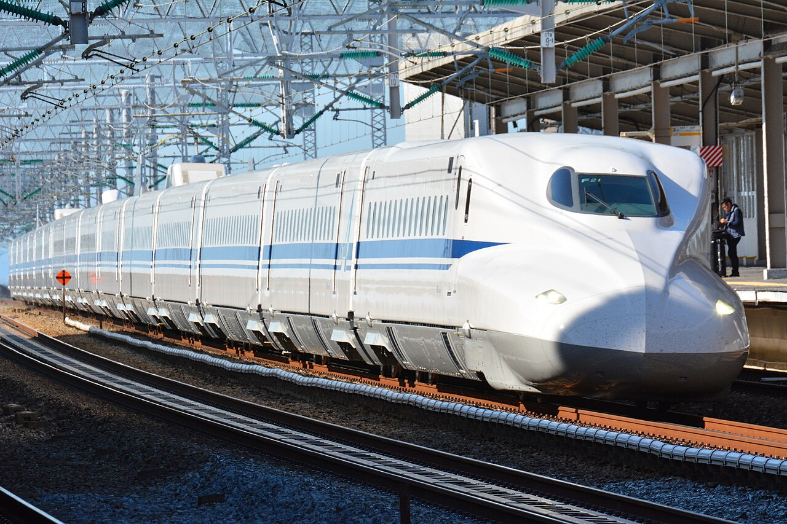
東海道新幹線と山陽新幹線を走る新幹線。山陽新幹線では最高300km/hで走るよ。写真は2019年のF21編成（JR西日本の4000番台）。
JR東海 車両のご案内 N700系・N700A（最高速度 東海道285km/h・山陽300km/h。2026-10-04 確認）
写真：Shinkansen N700-4000 F21 (49766090912).jpg
作者：Cheng-en Cheng from Taichung City, Taiwan
原典 ／ CC BY-SA 2.0
変更：Wikimedia提供の縮小画像（長辺1280px）を使用。トリミング・AI補正なし。
写真説明：JR West N700A (N700-4000 series) set F21, 2019-11-15
みずほ・さくら N700系8両 ― 博多駅
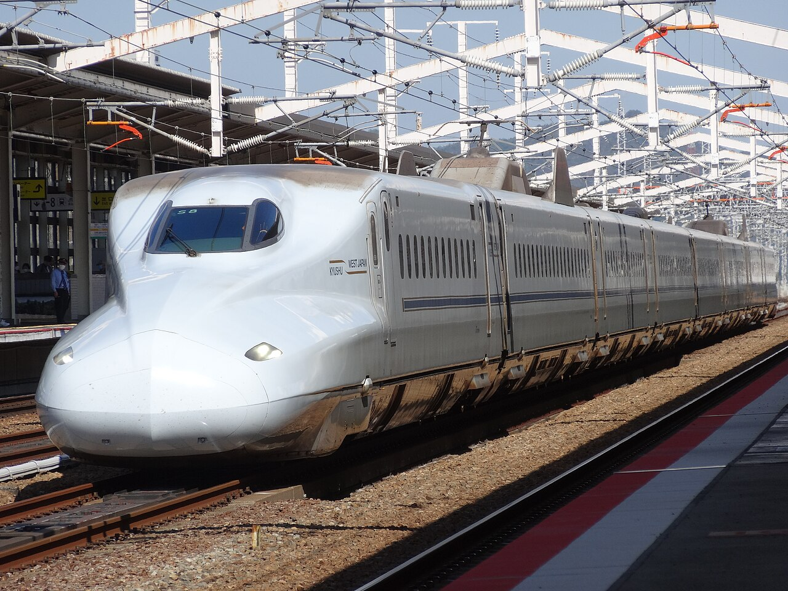
新大阪と九州の鹿児島中央を結ぶ「みずほ」「さくら」。九州新幹線の急な坂をのぼるため、8両ぜんぶにモーターがついているよ。写真は姫路駅のS8編成。
JRおでかけネット 山陽・九州新幹線 みずほ・さくら（8両・九州新幹線の急勾配のため全電動車。2026-10-04 確認）
写真：N700系S8編成.jpg
作者：Santetsu
原典 ／ CC BY 4.0
変更：Wikimedia提供の縮小画像（長辺1280px）を使用。トリミング・AI補正なし。
写真説明：姫路駅にて（N700系S8編成、2024年5月3日）
ひかりレールスター 700系 ― 姫路駅
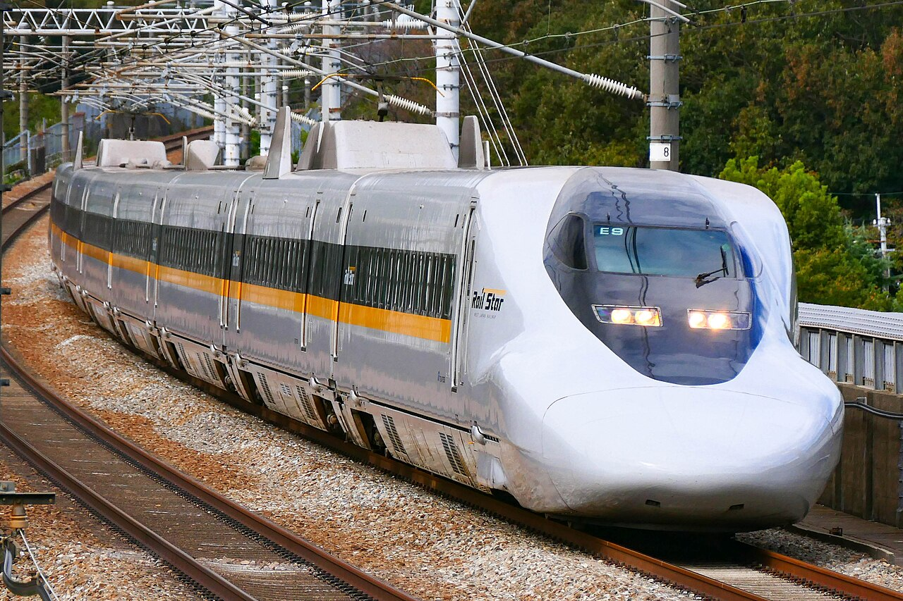
新大阪と博多のあいだを「ひかり」や「こだま」として走る8両の700系。ひかりレールスターの8号車には4人用の個室があるよ。
JRおでかけネット 700系（8両）（運行区間 新大阪〜博多、8号車に4人用個室。2026-10-04 確認）
写真：JRW Series700-7000-E9 Hikari592.jpg
作者：MaedaAkihiko
原典 ／ CC BY-SA 4.0
変更：Wikimedia提供の縮小画像（長辺1280px）を使用。トリミング・AI補正なし。
写真説明："Hikari Rail Star" No. 592 bound for Shin-Osaka by JR West's 700-7000 series E9 formation running between Okayama Station and Aioi Station on the Sanyo Shinkansen.
500系 こだま ― 新大阪駅
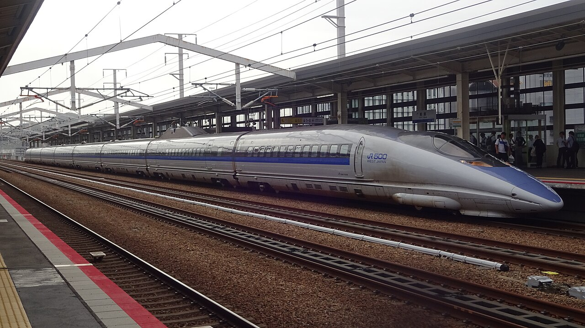
1997年にデビューしたときは、300km/hで走る日本でいちばん速い新幹線だったよ。いまは8両の「こだま」。2027年1月13日にふだんの運転を終える予定。写真は姫路駅に停まる新大阪行きのこだま（2023年）。
JR西日本 500系新幹線＆「ドクターイエロー」T5編成の引退について（2026年6月22日）・山陽新幹線の更なる安全性・快適性の向上（2024年7月24日）（2026-10-04 確認）
写真：500-V8.jpg
作者：Santetsu
原典 ／ CC BY 4.0
変更：Wikimedia提供の縮小画像（長辺1280px）を使用。トリミング・AI補正なし。
写真説明：A 500 series V formation stopping at Himeji Station as the Kodama train bound for Shin-Osaka.
0系 新幹線 ― 京都駅
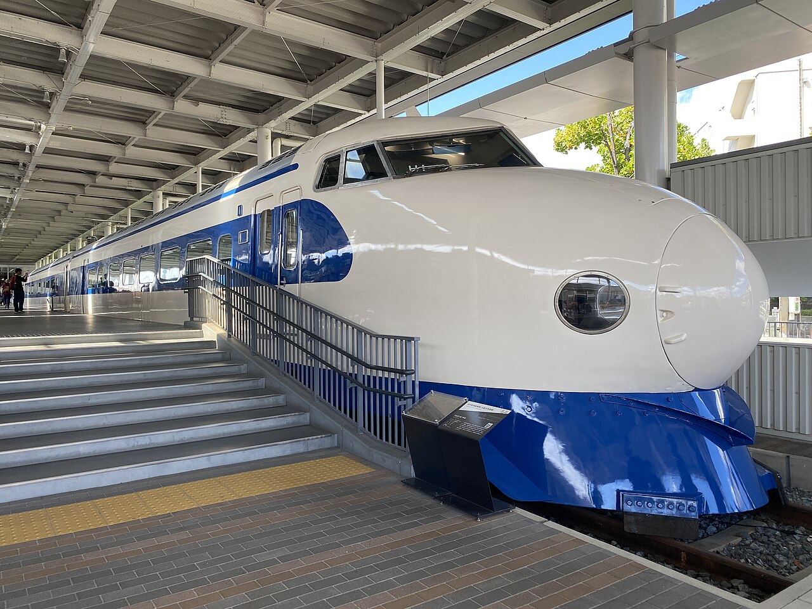
1964年に東海道新幹線が開業したときに走った、最初の新幹線。まるい鼻が目じるしで、最高210km/hで走ったよ。写真は京都鉄道博物館のプロムナードに展示されている21形1号車（2024年）。
京都鉄道博物館 本館 展示車両紹介（0系の展示。2026-10-05 確認。最高速度210km/hはゆかりさんの確認による）
写真：0 Series Shinkansen 21-1 Kyoto Railway Museum 20-09-2024.jpg
作者：BWard 1997
原典 ／ CC BY 4.0
変更：Wikimedia提供の縮小画像（長辺1280px）を使用。トリミング・AI補正なし。
写真説明：Car 21-1 from the iconic 0 Series Shinkansen class, the original high speed Bullet Train, on display outside in the Promenade area at the Kyoto Railway Museum.
ドクターイエロー 923形 ― 名古屋駅
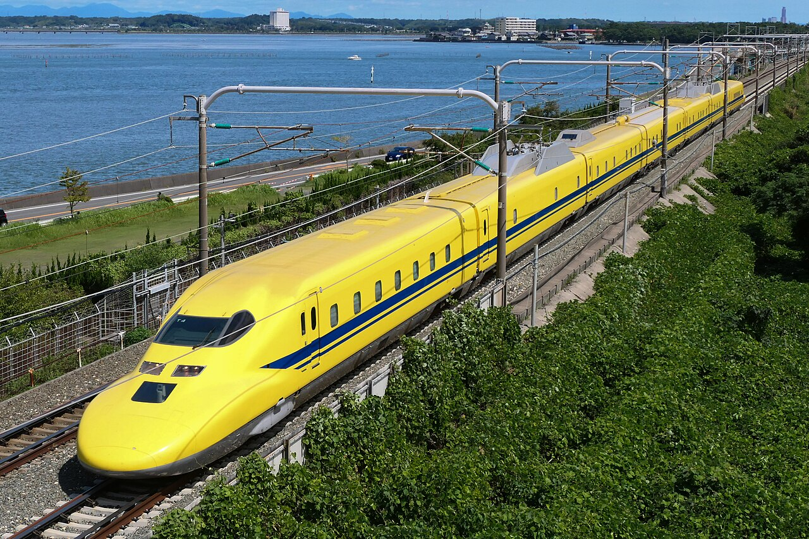
黄色い「新幹線のお医者さん」。約10日に一度、走りながら線路や電気の設備を調べていたよ。2025年1月に引退して、いまは名古屋のリニア・鉄道館で先頭車に会えるよ。写真は浜松〜豊橋を走るT4編成（2021年）。
JR東海 リニア・鉄道館 ドクターイエロー（T4編成）の車両展示について（2025年1月15日）・リニア・鉄道館 車両展示（2026-10-05 確認。最高速度270km/hはゆかりさんの確認による）
写真：Type923-T4.jpg
作者：MaedaAkihiko
原典 ／ CC BY-SA 4.0
変更：Wikimedia提供の縮小画像（長辺1280px）を使用。トリミング・AI補正なし。
写真説明：Shinkansen electric track comprehensive test car, 923 type T4 formation (Doctor Yellow) running between Hamamatsu and Toyohashi on the Tokaido Shinkansen.
N700S ― 静岡駅
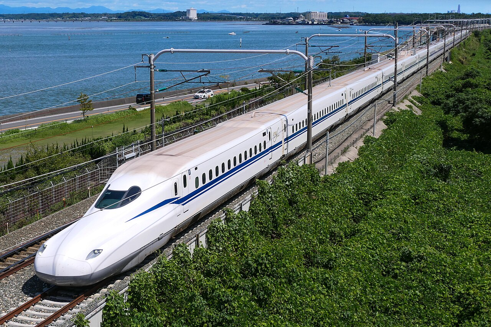
2020年にデビューした新しい新幹線。東海道新幹線では最高285km/h、山陽新幹線では300km/h。電気が止まっても、バッテリーで動けるしくみがあるよ。写真は浜名湖のそばを走るJ2編成（2021年）。
JR東海 車両のご案内 N700S（最高速度 東海道285km/h・山陽300km/h、2020年7月営業運転開始、バッテリ自走システム。2026-10-05 確認）
写真：Series-N700S-J2.jpg
作者：MaedaAkihiko
原典 ／ CC BY-SA 4.0
変更：Wikimedia提供の縮小画像（長辺1280px）を使用。トリミング・AI補正なし。
写真説明：N700S series J2 set belonging to JR Tokai, running between Hamamatsu and Toyohashi on the Tokaido Shinkansen.
E5系 はやぶさ ― 東京駅
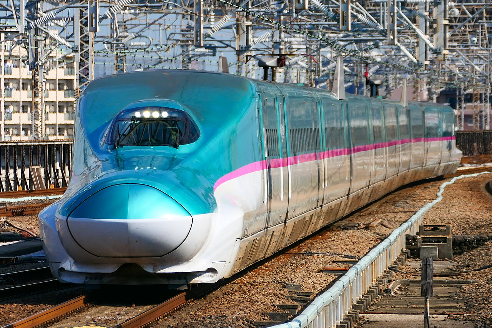
東京と東北・北海道を結ぶ「はやぶさ」。長い鼻が目じるしで、最高320km/hで走るよ。東京駅では東海道新幹線のとなりにやってくる。写真は大宮駅に入る東京行きのはやぶさ（2023年）。
JR東日本 E5系（最高速度320km/hはゆかりさんの確認による。2026-10-05）
写真：Series-E5-U44 Hayabusa-2.jpg
作者：MaedaAkihiko
原典 ／ CC BY-SA 4.0
変更：Wikimedia提供の縮小画像（長辺1280px）を使用。トリミング・AI補正なし。
写真説明："Hayabusa" No. 2 bound for Tokyo by E5 series U44 organization entering Omiya station of Tohoku Shinkansen.
813系 ― 鹿児島本線をはじめて開通したとき
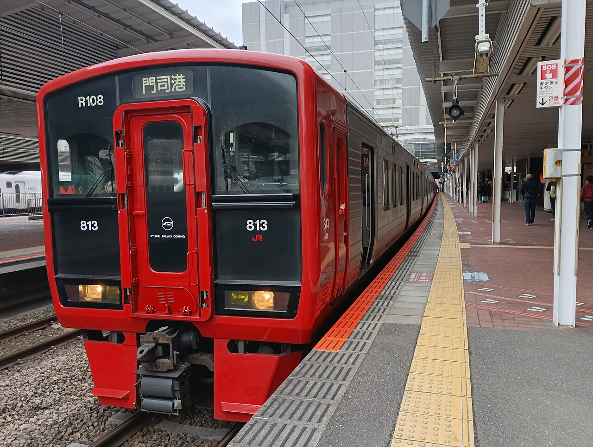
博多・北九州の鹿児島本線などを走る近郊形の交流電車。1994年に登場。写真は博多駅の門司港行き R108編成（2026年）。
鉄道チャンネル JR九州 813系のロングシート化（JR九州の発表を伝える記事。登場年と走る区間。JR九州の車両紹介ページは見つからなかった。2026-10-07 確認）
写真：813系R108編成(赤屋根).jpg
作者：画像提供依頼をやりたいだけ
原典 ／ CC BY 4.0
変更：Wikimedia提供の縮小画像（長辺1280px）を使用。トリミング・AI補正なし。
写真説明：博多駅にて
BEC819系 DENCHA ― 香椎駅
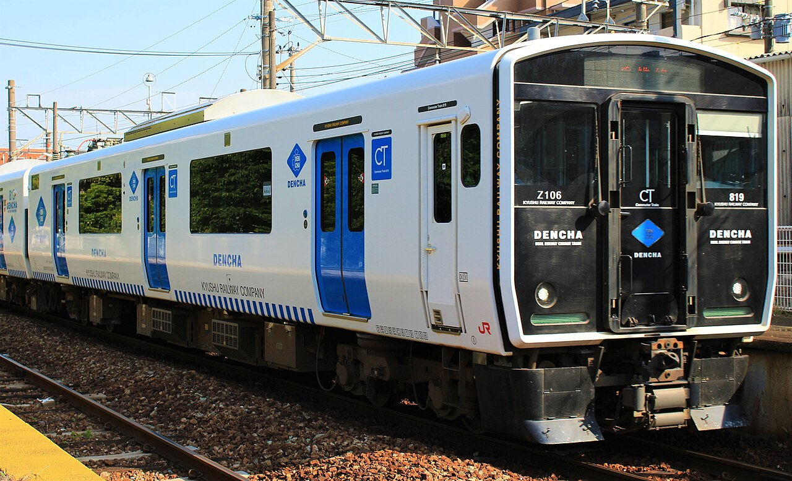
架線のある区間でバッテリーに電気をため、架線のない区間はその電気で走る蓄電池電車。香椎線では2019年3月16日のダイヤ改正から全列車が DENCHA になった（香椎駅に充電の設備）。写真の撮影場所は書かれていない（2021年）。
乗りものニュース 蓄電池電車「DENCHA」、非電化の香椎線に進出（JR九州の2018年12月14日の発表を伝える記事）・JR九州 環境報告（しくみ。2026-10-07 確認）
写真：JR Kyushu KumohaBEC819-106.jpg
作者：Rsa
原典 ／ CC BY-SA 3.0
変更：Wikimedia提供の縮小画像（長辺1280px）を使用。トリミング・AI補正なし。
写真説明：JR九州BEC819系電車
821系 ― 福間駅
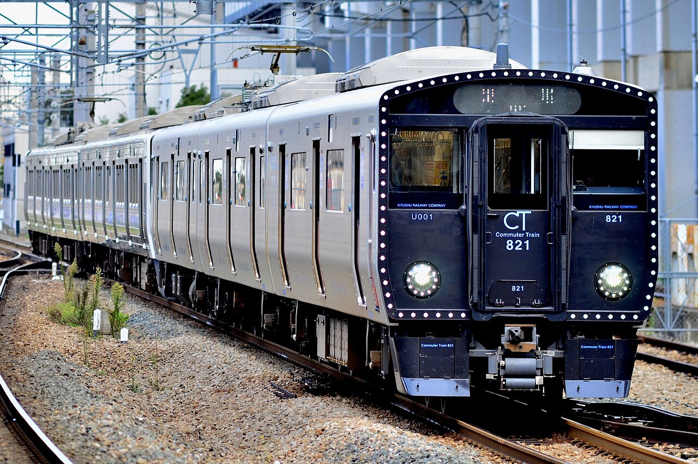
2019年3月16日に鹿児島本線の小倉〜荒尾でデビューした近郊形の交流電車。制御装置に炭化ケイ素（SiC）の半導体を使い、415系にくらべて消費電力量を約70%へらした。写真は竹下駅で、うしろは811系。
乗りものニュース 新型821系電車、3月16日デビュー（JR九州の2019年2月6日の発表を伝える記事。2026-10-08 確認）
写真：JR Kyushu 821 Series & 811 Series.jpg
作者：こはるん
原典 ／ CC BY-SA 4.0
変更：Wikimedia提供の縮小画像（長辺1280px）を使用。トリミング・AI補正なし。
写真説明：鹿児島本線竹下駅、821系と811系(リニューアル車)の併結
JR貨物 EF510形300番台（ECO-POWER レッドサンダー） ― 黒崎駅
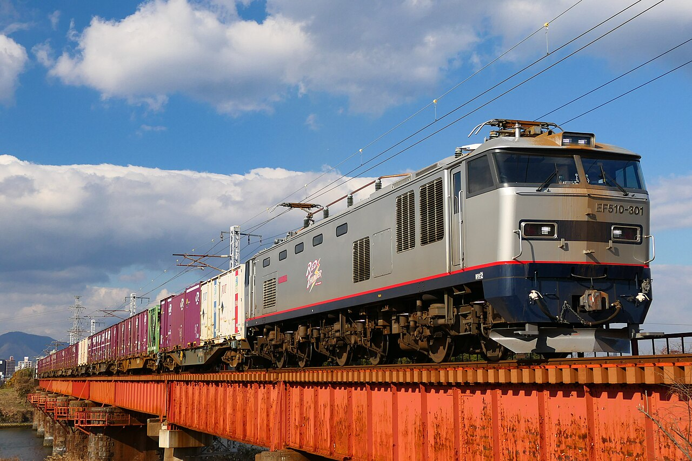
九州の貨物列車をひく交直流電気機関車。ED76形・EF81形の置きかえとして、2023年3月から九州で走りはじめた。銀色の車体で、愛称は「ECO-POWER レッドサンダー」。写真は日豊本線（2024年）。
鉄道チャンネル EF510形301号機を来春投入（JR貨物の2021年の発表を伝える記事。2026-10-08 確認）
写真：JRF EF510-301 Nippo-main-Line.jpg
作者：MaedaAkihiko
原典 ／ CC0
変更：Wikimedia提供の縮小画像（長辺1280px）を使用。トリミング・AI補正なし。
写真説明：日豊本線 高城〜鶴崎間を走る EF510-301 のコンテナ列車
883系 特急ソニック ― 小倉駅
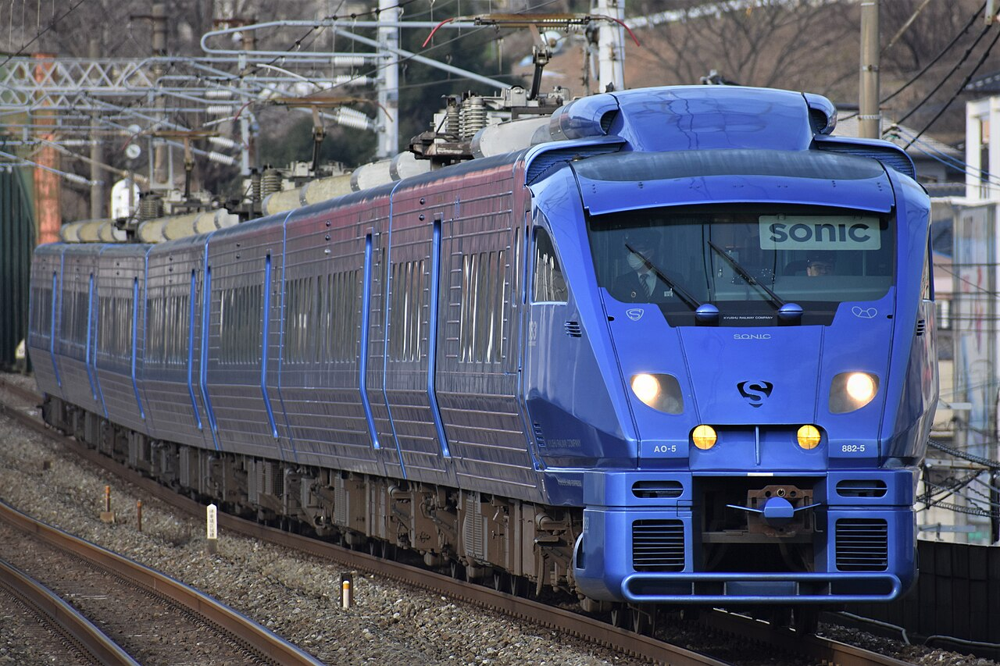
小倉を通って博多と大分をむすぶ特急「ソニック」の青い車両。2026年6月25日の JR九州「鉄道アップデート計画」で、2027年春ごろから客室をリニューアルする予定。写真は鹿児島本線の枝光駅（2018年）。
JR九州 特急ソニック・乗りものニュース 鉄道アップデート計画（2026-10-08 確認）
写真：L Kagoshima 883.jpg
作者：東風みるく
原典 ／ CC BY-SA 4.0
変更：Wikimedia提供の縮小画像（長辺1280px）を使用。トリミング・AI補正なし。
写真説明：JR鹿児島本線枝光駅で撮影
いまは使っていない写真
広電の線路ができたら戻す車両と、入れかえた前の写真です（2026-09-27 からアプリには出していません）。500系は2026-10-04に山陽新幹線と一緒に戻し、写真は新しいもの（上の「500系 こだま」）にしました。
500系新幹線
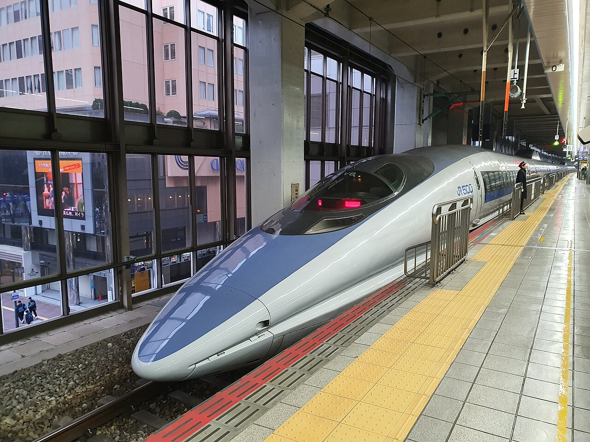
広島駅には、山陽新幹線もやってくるよ。これは新幹線の500系。在来線とは別の線路を走るよ。
車両・地域の参考資料
写真：JR West 500 series shinkansen set V8 at Hakata Station 20200115.jpg
作者：Rick888chen
原典 ／ CC BY-SA 4.0
変更：Wikimedia提供の縮小画像を使用。写真の描き換えなし。
写真説明：JR West 500 series shinkansen set V8 at Hakata Station
広島電鉄5200形 Greenmover APEX
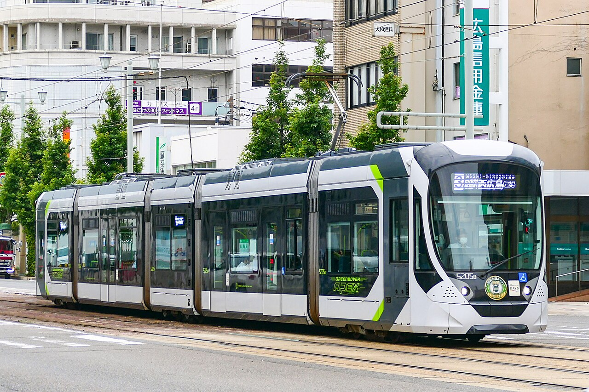
2019年、広電宮島口駅で出発式をしてデビューした路面電車。5つの車体がつながっているよ。
車両の参考資料（マイナビニュース 2019年3月14日） ／ 近畿車輛
写真：Hiroden Series5200-5205B Ekimae-route-HM.jpg
作者：MaedaAkihiko
原典 ／ CC0
変更：Wikimedia提供の縮小画像（長辺1280px）を使用。トリミング・AI補正なし。
写真説明：A train bound for Nishi-Hiroshima, operated by 5200 series 5205 set, runs between Takanobashi Station and Shiyakusho-mae Station on the Hiroshima Electric Railway Ujina Line.
キハ40形（広島色）
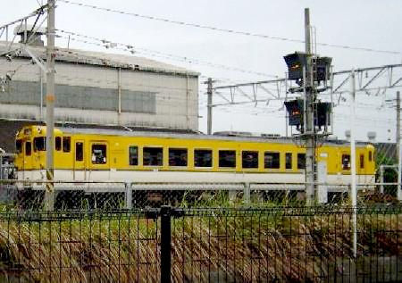
芸備線にゆかりのあるディーゼル車。写真は2004年の広島色。昔のすがたも集めよう。
車両・地域の参考資料
写真：Jrw-dc40-hiroshima.jpg
作者：Taisyo
原典 ／ CC BY 3.0
変更：Wikimedia提供画像を使用。トリミング・AI補正なし。
写真説明：2004年6月本人撮影
40系気動車
駅スタンプの名所の絵
写真を使わない自作の線画です。名所と駅の結びつきは以下で確認しました（確認日：2026-09-26）。赤瓦の町家の屋根、シロヘビの目と舌、ツルの頭だけ赤でえがいています。
効果音
駅スタンプを押す音（Hand-Foley-Pat01-1(Strong)）と、押したあとのキラーン（Bell_Accent16-2(Low)）。
音源：OtoLogic ／ CC BY 4.0（利用規約の確認日：2026-09-26）
変更：ファイル名だけ変更（assets/sound/stamp-press.mp3、stamp-kira-low.mp3）。音の加工なし。アプリ内で音量と鳴らすタイミングを調整。
けいさんの 正解の音（Inspiration06-1(Low)）と、まちがえたときの「もう一回」の音（Retro_Anime-System09-1）。
音源：OtoLogic ／ CC BY 4.0
変更：ファイル名だけ変更（assets/sound/correct-2.mp3、retry.mp3）。音の加工なし。
車両カードを ゲットしたときのキラーン（Bell_Accent14-1(High)）とジャジャーン（Phrase01-1）。もじ鉄図鑑と同じ音です。
音源：OtoLogic ／ CC BY 4.0
変更：ファイル名だけ変更（assets/sound/card-kira.mp3、card-jajaan.mp3）。音の加工なし。アプリ内で音量と鳴らすタイミングを調整。
家族撮影写真
Kizashi・はなあかり・カープ応援ラッピング・ばらのラッピングの家族撮影写真を本アプリで使用しています。縮小・トリミング（カープは動画の1コマの切り出し）、写っている人へのモザイク（はなあかり・ばら）、撮影情報の削除だけで、AI補正・描き換えはしていません。


.jpg){kind=link}


.jpg){kind=link}


.jpg){kind=link}


.jpg){kind=link}